Kurama All-Attacks Projectile Review Every base and command attack key in Kurama's manifest is now bound to the same local Train-style bullet/tracer projectile. Generated strings inherit via their base input key, avoiding duplicate spawns.
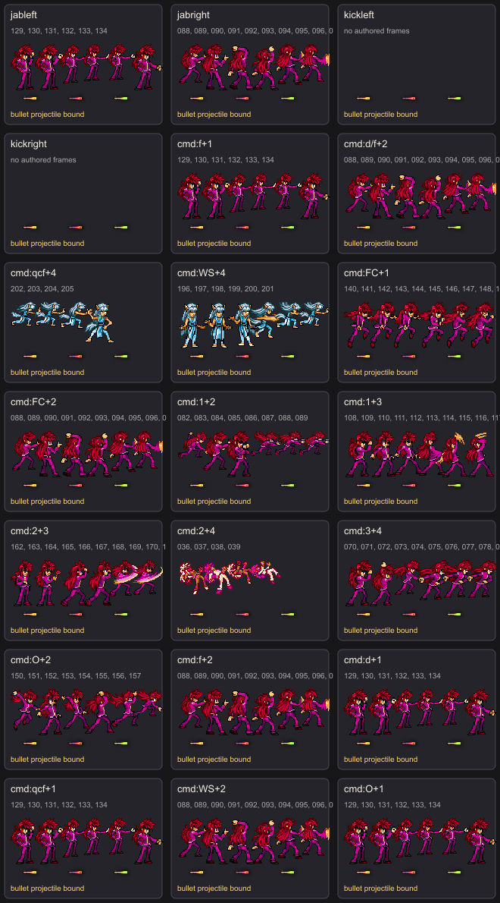
Projectile frame-000.png frame-001.png frame-002.png
Coverage 21 attack keys bound. No Kurama original sprite-sheet projectile crop is used.
jableft jableft-finger-gun-shot 129 130 131 132 133 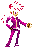
134 spawnFrame 3 | offset 0, 1.02, 0.92 | damageScale 0.72 | limited homing 40f
jabright jabright-finger-gun-shot 088 089 090 091 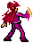
092 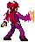
093 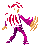
094 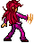
095 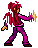
096 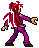
097 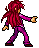
098 099 spawnFrame 3 | offset 0, 1.02, 0.92 | damageScale 0.78 | limited homing 40f
kickleft kickleft-finger-gun-shot No authored animation frames; projectile still binds when this attack is selected.
spawnFrame 3 | offset 0, 1.02, 0.92 | damageScale 0.78 | limited homing 40f
kickright kickright-finger-gun-shot No authored animation frames; projectile still binds when this attack is selected.
spawnFrame 3 | offset 0, 1.02, 0.92 | damageScale 0.8 | limited homing 40f
cmd:f+1 cmd-f-1-finger-gun-shot 129 130 131 132 133 134
spawnFrame 3 | offset 0, 1.02, 0.92 | damageScale 0.84 | limited homing 40f
cmd:d/f+2 cmd-d-f-2-finger-gun-shot 088 089 090 091 092 093 094 095 096 097 098 099 spawnFrame 3 | offset 0, 1.02, 0.92 | damageScale 0.84 | limited homing 40f
cmd:qcf+4 cmd-qcf-4-finger-gun-shot 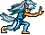
202 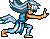
203 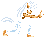
204 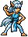
205 spawnFrame 4 | offset 0, 1.02, 0.92 | damageScale 0.92 | limited homing 40f
cmd:WS+4 cmd-ws-4-finger-gun-shot 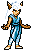
196 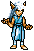
197 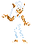
198 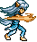
199 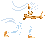
200 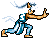
201 spawnFrame 3 | offset 0, 1.02, 0.92 | damageScale 0.84 | limited homing 40f
cmd:FC+1 cmd-fc-1-finger-gun-shot 140 141 142 143 144 145 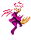
146 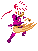
147 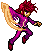
148 149 spawnFrame 3 | offset 0, 1.02, 0.92 | damageScale 0.84 | limited homing 40f
cmd:FC+2 cmd-fc-2-finger-gun-shot 088 089 090 091 092 093 094 095 096 097 098 099 spawnFrame 3 | offset 0, 1.02, 0.92 | damageScale 0.84 | limited homing 40f
cmd:1+2 cmd-1-2-finger-gun-shot 082 083 084 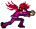
085 086 087 088 089 spawnFrame 3 | offset 0, 1.02, 0.92 | damageScale 0.84 | limited homing 40f
cmd:1+3 cmd-1-3-finger-gun-shot 108 109 110 111 112 113 114 115 116 117 118 spawnFrame 3 | offset 0, 1.02, 0.92 | damageScale 0.84 | limited homing 40f
cmd:2+3 cmd-2-3-finger-gun-shot 162 163 164 165 166 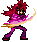
167 168 169 170 171 172 173 174 175 176 177 178 179 180 spawnFrame 4 | offset 0, 1.02, 0.92 | damageScale 0.92 | limited homing 40f
cmd:2+4 cmd-2-4-finger-gun-shot 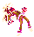
036 037 038 039 spawnFrame 3 | offset 0, 1.02, 0.92 | damageScale 0.84 | limited homing 40f
cmd:3+4 cmd-3-4-finger-gun-shot 070 071 072 073 074 075 076 077 078 079 spawnFrame 4 | offset 0, 1.02, 0.92 | damageScale 0.92 | limited homing 40f
cmd:O+2 cmd-o-2-finger-gun-shot spawnFrame 4 | offset 0, 1.02, 0.92 | damageScale 0.92 | limited homing 40f
cmd:f+2 cmd-f-2-finger-gun-shot 088 089 090 091 092 093 094 095 096 097 098 099 spawnFrame 3 | offset 0, 1.02, 0.92 | damageScale 0.84 | limited homing 40f
cmd:d+1 cmd-d-1-finger-gun-shot 129 130 131 132 133 134
spawnFrame 3 | offset 0, 1.02, 0.92 | damageScale 0.84 | limited homing 40f
cmd:qcf+1 cmd-qcf-1-finger-gun-shot 129 130 131 132 133 134
spawnFrame 3 | offset 0, 1.02, 0.92 | damageScale 0.84 | limited homing 40f
cmd:WS+2 cmd-ws-2-finger-gun-shot 088 089 090 091 092 093 094 095 096 097 098 099 spawnFrame 3 | offset 0, 1.02, 0.92 | damageScale 0.84 | limited homing 40f
cmd:O+1 cmd-o-1-finger-gun-shot 129 130 131 132 133 134
spawnFrame 3 | offset 0, 1.02, 0.92 | damageScale 0.84 | limited homing 40f